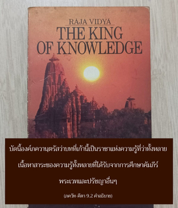
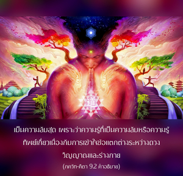
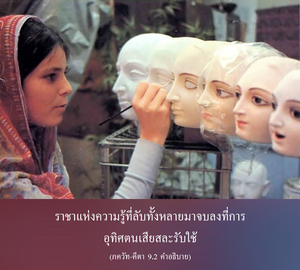

ความรู้นี้เป็นราชาแห่งการศึกษา เป็นความลับสุดยอดในความลับทั้งหลาย เป็นความรู้ที่บริสุทธิ์ที่สุด เนื่องจากสำเหนียกได้โดยตรงเกี่ยวกับตนเองด้วยการรู้แจ้ง จึงเป็นความสมบูรณ์แห่งศาสนา เป็นสิ่งนิรันดร และปฏิบัติได้ด้วยความรื่นเริง





ภควัท-คีตา บทนี้เรียกว่า ราชาแห่งการศึกษา เนื่องจากเป็นเนื้อหาสาระของหลักคำสอน และปรัชญาทั้งหมดที่อธิบายไว้ก่อนหน้านี้ ในหมู่นักปราชญ์คนสำคัญๆ ของประเทศอินเดียมี เคาตม, กณาท, กปิล, ยาชฺญวลฺกฺย, ชาณดิลยะ และไวชวานะระ และในที่สุดมี วฺยาสเทว ผู้เขียน เวทานฺต-สูตฺร ดังนั้น จึงไม่ขาดแคลนความรู้ทางด้านปรัชญา หรือความรู้ทิพย์ บัดนี้องค์ภควานฺตรัสว่า บทที่เก้านี้เป็นราชาแห่งความรู้ที่ว่าทั้งหลาย เนื้อหาสาระของความรู้ทั้งหลายที่ได้รับจากการศึกษาคัมภีร์พระเวท และปรัชญาอื่นๆ เป็นความลับสุด เพราะว่าความรู้ที่เป็นความลับ หรือความรู้ทิพย์เกี่ยวเนื่องกับการเข้าใจข้อแตกต่างระหว่างดวงวิญญาณ และร่างกาย ราชาแห่งความรู้ที่ลับทั้งหลายมาจบลงที่การอุทิศตนเสียสละรับใช้
โดยทั่วไปผู้คนไม่ได้รับการศึกษาในความรู้ที่ลับเฉพาะเช่นนี้ เนื่องจากศึกษาความรู้จากภายนอก สำหรับการศึกษาทั่วไปผู้คนไปสัมผัสกับความรู้มากมายหลายสาขา เช่น การเมือง สังคมศึกษา ฟิสิกส์ เคมี คณิตศาสตร์ ดาราศาสตร์ วิศวกรรมศาสตร์ ฯลฯ มีความรู้หลายสาขามากมายทั่วโลก และมีมหาวิทยาลัยใหญ่ๆ มากมาย แต่ด้วยความอับโชคไม่มีมหาวิทยาลัย หรือสถาบันการศึกษาใดที่สอนศาสตร์แห่งดวงวิญญาณ ถึงแม้ว่าดวงวิญญาณจะเป็นส่วนสำคัญที่สุดของร่างกาย หากไม่มีดวงวิญญาณร่างกายจะไม่มีคุณค่าอันใดเลย ถึงกระนั้น ผู้คนก็ยังเน้นมากเกี่ยวกับความจำเป็นของชีวิตทางร่างกายโดยไม่สนใจต่อดวงวิญญาณ ซึ่งมีความสำคัญกว่า
ในหนังสือ ภควัท-คีตา โดยเฉพาะจากบทที่สองเป็นต้นมาได้เน้นถึงความสำคัญของดวงวิญญาณ ตอนต้นองค์ภควานฺตรัสว่า ร่างกายนี้เสื่อมสลาย และวิญญาณไม่เสื่อมสลาย (อนฺตวนฺต อิเม เทหา นิตฺยโสฺยกฺตาห์ ศรีริณห์) นี่คือส่วนลับแห่งความรู้ หากเพียงแต่รู้ว่าดวงวิญญาณแตกต่างจากร่างกาย โดยธรรมชาติดวงวิญญาณจะไม่มีการเปลี่ยนรูป ไม่มีวันถูกทำลาย และเป็นอมตะ เช่นนี้ไม่ใช่เป็นการได้ให้ข้อมูลในเชิงบวกเกี่ยวกับดวงวิญญาณ บางครั้งผู้คนจะลืมความรู้สึกว่าดวงวิญญาณแตกต่างจากร่างกาย เมื่อร่างกายจบสิ้นลง หรือเมื่อหลุดพ้นจากร่างกายไปแล้วดวงวิญญาณจะอยู่ในความว่างเปล่า และกลายมาเป็นผู้ไม่มีบุคลิกภาพ แต่ความจริงไม่เป็นเช่นนั้น เป็นไปได้อย่างไรที่ดวงวิญญาณซึ่งมีความตื่นตัวมากภายในร่างกายนี้ จะไม่มีความตื่นตัวหลังจากหลุดพ้นไปจากร่างกายนี้แล้ว หากดวงวิญญาณเป็นอมตะจะต้องตื่นตัวอยู่ตลอดเวลา ตื่นตัวนิรันดรกิจกรรมต่างๆ ของเขาในอาณาจักรทิพย์เป็นความรู้ทิพย์ที่ลับที่สุด กิจกรรมต่างๆ เหล่านี้ของดวงวิญญาณได้ถูกแสดงไว้ ณ ที่นี้ว่ารวมมาเป็นราชาแห่งความรู้ทั้งหลาย เป็นส่วนลับที่สุดของเหล่าวิชาความรู้ทั้งหมด
ความรู้นี้เป็นรูปแบบที่บริสุทธิ์ที่สุด กิจกรรมทั้งหลายดังที่ได้อธิบายไว้ในวรรณกรรมพระเวท ปทฺม ปุราณ ว่ากิจกรรมบาปของมนุษย์ได้ถูกวิเคราะห์ไว้ และปรากฏออกมาเป็นผลแห่งความบาปซ้ำซาก พวกที่ปฏิบัติกิจกรรมเพื่อผลทางวัตถุจะถูกพันธนาการอยู่ในระดับต่างๆกัน และก่อร่างมาเป็นผลบาปต่างๆ ตัวอย่างเช่น เมื่อเราหว่านเมล็ดพันธุ์ของต้นไม้ชนิดหนึ่ง ต้นไม้จะไม่เจริญเติบโตขึ้นมาในทันทีทันใด แต่จะต้องใช้เวลาก่อนอื่นเป็นต้นเล็กๆ จะเป็นหน่อจากนั้นก็ออกมาในรูปของต้นไม้ มีดอก มีผล และเมื่อสมบูรณ์ผู้ที่หว่านเมล็ดพันธุ์ของต้นไม้ก็จะได้รับความสุขจากดอกไม้ และผลไม้เหล่านั้น ในทำนองเดียวกัน มนุษย์ทำบาปก็เหมือนกับการหว่านเมล็ดพันธุ์ที่ต้องใช้เวลากว่าจะบังเกิดผล หรือให้ปรากฏออกมา ความบาปมีอยู่หลายระดับ การทำบาปอาจยุติลงภายในปัจเจกบุคคล แต่ผลบาปนั้นก็ยังจะต้องได้รับ มีความบาปต่างๆ ซึ่งอยู่ในรูปของเมล็ดพันธุ์มีความบาปที่ปรากฏออกมา และให้ผลแก่เราแล้ว ซึ่งมาในรูปของความทุกข์ และความเจ็บปวด
ดังที่ได้อธิบายไว้ในโศลกที่ยี่สิบแปดของบทที่เจ็ด บุคคลที่จบสิ้นกับผลบาปทั้งปวง และทำแต่กิจกรรมบุญอย่างสมบูรณ์เป็นอิสระจากสิ่งคู่ในโลกวัตถุนี้ ปฏิบัติในการอุทิศตนเสียสละรับใช้องค์ภควานฺ กฺฤษฺณ อีกนัยหนึ่ง พวกที่ปฏิบัติการอุทิศตนเสียสละรับใช้แด่องค์ภควานฺจริงๆ เป็นผู้ที่ได้รับอิสรภาพจากผลบาปทั้งปวงเรียบร้อยแล้ว คำกล่าวเช่นนี้ได้ยืนยันไว้ใน ปทฺม ปุราณ ดังนี้
อปฺรารพฺธ-ผลํ ปาปํ
กูฏํ พีชํ ผโลนฺมุขมฺ
กฺรเมไณว ปฺรลีเยต
วิษฺณุ-ภกฺติ-รตาตฺมนามฺ
สำหรับพวกที่ปฏิบัติการอุทิศตนเสียสละรับใช้แด่องค์ภควานฺ ผลบาปทั้งหลายนั้นไม่ว่าจะปรากฏออกมาแล้ว เก็บอยู่ในคลัง หรือในรูปของเมล็ดพันธุ์จะค่อยๆ สลายไป ดังนั้น อำนาจที่ทำให้บริสุทธิ์จากการอุทิศตนเสียสละรับใช้นั้นมีพลังมาก เรียกว่า ปวิตฺรมฺ อุตฺตมมฺ บริสุทธิ์ที่สุด อุตฺตม หมายถึงทิพย์ ตม หมายถึงโลกวัตถุนี้ หรือความมืด และ อุตฺตม หมายถึง สิ่งที่เป็นทิพย์เหนือกิจกรรมต่างๆ ทางวัตถุ กิจกรรมในการอุทิศตนเสียสละไม่ถือว่าเป็นวัตถุ ถึงแม้ว่าบางครั้งจะปรากฏว่าสาวกปฏิบัติตนเหมือนกับคนธรรมดาทั่วไป ผู้ที่สามารถเห็น และคุ้นเคยกับการอุทิศตนเสียสละรับใช้จะทราบว่ากิจกรรมเหล่านี้ไม่ใช่เป็นวัตถุ กิจกรรมเหล่านี้ทั้งหมดเป็นทิพย์ เป็นการอุทิศตนเสียสละซึ่งไม่มีมลทินจากระดับต่างๆ ของธรรมชาติวัตถุ
ได้กล่าวไว้ว่าการปฏิบัติอุทิศตนเสียสละรับใช้มีความสมบูรณ์จนเราสามารถสำเหนียกถึงผลลัพธ์ได้โดยตรง ผลลัพธ์โดยตรงนี้สำเหนียกได้อย่างแท้จริง และพวกเราได้รับประสบการณ์จากการปฏิบัติว่า ผู้ใดที่สวดภาวนาพระนามอันศักดิ์สิทธิ์ขององค์กฺฤษฺณ หเร กฺฤษฺณ หเร กฺฤษฺณ กฺฤษฺณ กฺฤษฺณ หเร หเร หเร ราม หเร ราม ราม ราม หเร หเร โดยปราศจากอาบัติจะรู้สึกว่ามีความสุขทิพย์ และมีความบริสุทธิ์ขึ้นอย่างรวดเร็วจากมลทินทางวัตถุทั้งปวง เราสามารถเห็นผลเช่นนี้ได้จริง นอกเหนือไปจากนั้น หากผู้ใดปฏิบัติไม่เพียงแค่สดับฟัง แต่ยังพยายามเผยแพร่สาส์นแห่งการอุทิศตนเสียสละรับใช้นี้ด้วย หรือหากตัวเราเองช่วยในกิจกรรมเพื่อเผยแพร่กฺฤษฺณจิตสำนึกจะรู้สึกว่าเราได้ค่อยๆ เจริญก้าวหน้าในวิถีทิพย์ ความเจริญก้าวหน้าในชีวิตทิพย์นี้ไม่ได้ขึ้นอยู่กับการศึกษา หรือคุณสมบัติใดๆ ในอดีต เนื่องจากเป็นวิธีการที่มีความบริสุทธิ์ในตัวเอง เพียงแต่ได้ปฏิบัติเท่านั้นเราก็จะกลายเป็นผู้บริสุทธิ์
ใน เวทานฺต-สูตฺร (3.2.26) ได้อธิบายไว้เช่นกัน ดังนี้ ปฺรกาศศฺ จ กรฺมณฺยฺ อภฺยาสาตฺ “การอุทิศตนเสียสละรับใช้มีพลังอำนาจมาก เพียงแต่ปฏิบัติในกิจกรรมแห่งการอุทิศตนเสียสละรับใช้ เราจะได้รับแสงสว่างโดยไม่ต้องสงสัย” ตัวอย่างในเชิงปฏิบัติเช่นนี้พบได้ในอดีตชาติของ นารท ในชาตินั้นเป็นบุตรของคนรับใช้ ท่านไม่มีการศึกษา ไม่ได้เกิดในตระกูลสูงศักดิ์ แต่เมื่อมารดาของท่านปฏิบัติรับใช้สาวกผู้ยิ่งใหญ่ นารทร่วมรับใช้ด้วย บางครั้งเมื่อมารดาไม่อยู่ท่านก็รับใช้สาวกผู้ยิ่งใหญ่ด้วยตนเอง นารท กล่าวว่า
อุจฉิษฏะ-เลปาน อะนุโมทิโต ทวิไชห์
สักฤต สมะ ภุญเช ตัท-อะปาสตะ-กิลพิษะห์
เอวัม ปรัวฤตตัสยะ วิศุทธะ-เจตะสัส
ตัท-ธรรมะ เอวาตมะ-รุจิห์ ประชายะเต
โศลกนี้จาก ศฺรีมทฺ-ภาควตมฺ (1.5.25) นารท อธิบายถึงอดีตชาติให้ศิษย์ วฺยาสเทว ฟังโดยกล่าวว่าระหว่างที่ปฏิบัติตนเป็นเด็กรับใช้สาวกผู้บริสุทธิ์เป็นเวลาสี่เดือน ขณะที่มาพักอาศัยอยู่นั้น นารท ได้คบหาสมาคมกับสาวกผู้บริสุทธิ์อย่างใกล้ชิด บางครั้งนักปราชญ์เหล่านั้นเหลืออาหารไว้ในจาน และเด็กน้อยที่เป็นผู้ล้างจานปรารถนาจะลิ้มรสอาหารที่เหลือจึงขออนุญาตจากสาวกผู้ยิ่งใหญ่ เมื่อได้รับอนุญาต นารท ก็รับประทานอาหารนั้น ต่อมา นารท ได้หลุดพ้นจากผลบาปทั้งปวง ขณะที่รับประทานไปเรื่อยๆ หัวใจค่อยๆ บริสุทธิ์ขึ้นเหมือนกับนักปราชญ์เหล่านั้น สาวกผู้ยิ่งใหญ่ดื่มด่ำอยู่กับรสแห่งการอุทิศตนเสียสละรับใช้ต่อองค์ภควานฺด้วยการสดับฟัง และสวดภาวนาอย่างไม่รู้จักหยุดหย่อน นารท ค่อยๆ พัฒนารสชาติเช่นนี้ และได้กล่าวดังนี้
ตะตรานว-อะหัม กฤษณะ-กะถาห์ ประคายะตาม
อะนุคระเหณาศฤณะวัม มะโน-หะราห์
ตาห์ ศรัทธะยา เม ’นุ-ปะทัม วิศฤณวะตะห์
ปริยะศระวัสย อังคะ มะมาภะวัท รุจิห์
จากการคบหาสมาคมกับเหล่านักปราชญ์ นารท ได้รับรสในการสดับฟัง และสวดภาวนาพระบารมีขององค์ภควานฺ และได้พัฒนาความปรารถนาอย่างยิ่งใหญ่ในการอุทิศตนเสียสละรับใช้ ดังที่ได้อธิบายไว้ใน เวทานฺต-สูตฺร ว่า ปฺรกาศศฺ จ กรฺมณฺยฺ อภฺยาสาตฺ หากผู้ใดเพียงแต่ปฏิบัติการอุทิศตนเสียสละรับใช้ทุกสิ่งทุกอย่างนั้นจะถูกเปิดเผยขึ้นโดยปริยาย และเขาจะสามารถเข้าใจ เช่นนี้เรียกว่า ปฺรตฺยกฺษ หรือสำเหนียกโดยตรง
คำว่า ธรฺมฺยมฺ หมายความว่า “วิถีทางแห่งศาสนา” อันที่จริง นารท เป็นบุตรของคนรับใช้ไม่มีโอกาสไปโรงเรียน ท่านเพียงแต่ช่วย มารดาเท่านั้น แต่ด้วยความโชคดีที่มารดาถวายการรับใช้ต่อเหล่าสาวกเด็กน้อย นารท จึงได้รับโอกาสนี้ จากการคบหาสมาคมนี้ทำให้บรรลุถึงจุดมุ่งหมายสูงสุดของศาสนาทั้งหลาย จุดมุ่งหมายสูงสุดของศาสนาทั้งหมด คือ การอุทิศเสียสละรับใช้ ดังที่ได้กล่าวไว้ใน ศฺรีมทฺ-ภาควตมฺ (ส ไว ปุํสำ ปโร ธรฺโม ยโต ภกฺติรฺ อโธกฺษเช) ผู้มีศาสนาโดยทั่วไปไม่รู้ว่าความสมบูรณ์สูงสุดของศาสนา คือ บรรลุถึงการอุทิศตนเสียสละรับใช้ ดังที่ได้กล่าวไว้ในโศลกสุดท้ายของบทที่แปดว่า (เวเทษุ ยชฺเญษุ ตปห์สุ ไจว) ความรู้พระเวทโดยปกตินั้นจำเป็นต้องรู้แจ้งตนเอง แต่ ณ ที่นี้จะเห็นว่าถึงแม้ นารท ไม่เคยไปโรงเรียนของพระอาจารย์ทิพย์ และไม่ได้รับการศึกษาในหลักธรรมพระเวทท่านยังได้รับผลประโยชน์สูงสุดในการศึกษาคัมภีร์พระเวท วิธีการนี้มีพลังอำนาจมากแม้จะไม่ได้ปฏิบัติตามวิธีการทางศาสนาอย่างสม่ำเสมอ ท่านยังสามารถเจริญก้าวหน้าไปสู่ความสมบูรณ์สูงสุด จะเป็นอย่างนั้นไปได้อย่างไรนั้นวรรณกรรมพระเวทได้ยืนยันไว้เช่นกันว่า อาจารฺยวานฺ ปุรุโษ เวท ผู้ที่คบหาสมาคมกับ อาจารฺย ผู้ยิ่งใหญ่ ถึงแม้จะไม่ได้รับการศึกษาหรือไม่เคยศึกษาคัมภีร์พระเวท เขาก็ยังสามารถที่จะคุ้นเคยกับความรู้ทั้งหมด เท่าที่จำเป็นเพื่อความรู้แจ้ง
เพราะเหตุใดวิธีแห่งการอุทิศตนเสียสละรับใช้จึงเป็นวิธีที่มีความสุขมาก (สุ-สุขมฺ) การอุทิศตนเสียสละรับใช้ประกอบด้วย ศฺรวณํ กีรฺตนํ วิษฺโณห์ ดังนั้น เราเพียงแต่สดับฟัง และสวดภาวนาพระบารมีขององค์ภควานฺ หรือว่าไปสดับฟังปรัชญาเกี่ยวกับความรู้ทิพย์ที่ อาจารฺย ผู้เชื่อถือได้เป็นผู้ให้ เพียงแต่เรานั่งลงเราก็ยังสามารถที่จะเรียนรู้ได้ จากนั้นก็รับประทานอาหารอันเอร็ดอร่อยที่เหลือจากการถวายให้องค์ภควานฺแล้ว ในทุกๆ ระดับแห่งการอุทิศตนเสียสละรับใช้เป็นที่น่ารื่นรมย์ เราสามารถปฏิบัติการอุทิศตนเสียสละรับใช้ แม้อยู่ในสภาวะที่ยากจนที่สุด องค์ภควานฺตรัสว่า ปตฺรํ ปุษฺปํ ผลํ โตยมฺ พระองค์ทรงพร้อมที่จะรับการถวายทุกสิ่งทุกอย่างจากสาวก ไม่ว่าจะเป็นอะไรแม้แต่ใบไม้ ดอกไม้ ผลไม้เพียงเล็กน้อย หรือน้ำเพียงนิดเดียวซึ่งมีอยู่ทุกที่ทั่วโลก สิ่งของเหล่านี้ใครก็สามารถนำมาถวายให้ได้ไม่ว่าจะอยู่ในสภาวะสังคมเช่นไร พระองค์จะทรงรับไว้หากถวายด้วยใจรัก มีตัวอย่างมากมายในประวัติศาสตร์ว่าเพียงแต่ลิ้มรสใบทุละสีที่ถวายให้พระบาทรูปดอกบัวขององค์ภควานฺแล้วนักปราชญ์ผู้ยิ่งใหญ่ เช่น สนตฺ-กุมาร ได้กลายเป็นสาวกผู้ยิ่งใหญ่ ฉะนั้น วิธีการอุทิศตนเสียสละเป็นสิ่งที่ดีมาก และปฏิบัติได้ด้วยอารมณ์ที่มีความสุข องค์ภควานฺจะรับเฉพาะความรักที่ถวายให้พระองค์ที่มาพร้อมกับเครื่องถวาย
ได้กล่าวไว้ ณ ที่นี้ว่าการอุทิศตนเสียสละรับใช้เช่นนี้มีอยู่ชั่วกัลปวสาน ซึ่งไม่เหมือนกับที่นักปราชญ์มายาวาทีอ้าง แม้ว่าบางครั้งพวกนี้รับเอาสิ่งที่สมมติว่าเป็นการอุทิศตนเสียสละรับใช้ไปปฏิบัติ แต่แนวความคิด คือ ตราบเท่าที่ยังไม่หลุดพ้นต้องอุทิศตนเสียสละรับใช้ต่อไป เมื่อในที่สุดหลุดพ้นแล้วพวกเขา “จะกลายมาเป็นหนึ่งเดียวกับองค์ภควานฺ” การอุทิศตนเสียสละรับใช้ชั่วครั้งชั่วคราวเช่นนี้ไม่ถือว่าเป็นการอุทิศตนเสียสละรับใช้ที่บริสุทธิ์ การอุทิศตนเสียสละรับใช้ที่แท้จริงจะทำอย่างต่อเนื่อง แม้หลังจากได้รับความหลุดพ้นแล้ว เมื่อสาวกไปยังดาวเคราะห์ทิพย์ในอาณาจักรขององค์ภควานฺก็ยังปฏิบัติการรับใช้พระองค์อยู่ที่นั่น โดยมิบังอาจที่จะกลายไปเป็นหนึ่งเดียวกับองค์ภควานฺ
ดังจะได้เห็นใน ภควัท-คีตา ว่าการอุทิศตนเสียสละรับใช้ที่แท้จริงเริ่มต้นหลังจากหลุดพ้นแล้ว หลังจากหลุดพ้นและสถิตในตำแหน่ง พฺรหฺมนฺ แล้ว (พฺรหฺม-ภูต) การอุทิศตนเสียสละรับใช้จึงเริ่มต้นขึ้น (สมห์ สเรฺวษุ ภูเตษุ มทฺ-ภกฺตึ ลภเต ปรามฺ) ไม่มีผู้ใดสามารถเข้าใจองค์ภควานฺได้ด้วยการปฏิบัติ กรฺม-โยค, ชฺญาน-โยค, อษฺฏางฺค-โยค หรือปฏิบัติโยคะอื่นๆ โดยเอกเทศ จากวิธีโยคะต่างๆ เหล่านี้เขาอาจจะเจริญขึ้นเล็กน้อยไปสู่ ภกฺติ-โยค หากไปไม่ถึงระดับแห่งการอุทิศตนเสียสละรับใช้ เขาจะไม่สามารถเข้าใจว่าบุคลิกภาพแห่งองค์ภควานฺคืออะไร ใน ศฺรีมทฺ-ภาควตมฺ ได้ยืนยันไว้ว่าเมื่อได้รับความบริสุทธิ์จากการปฏิบัติตามวิธีแห่งการอุทิศตนเสียสละรับใช้โดยเฉพาะ จากการสดับฟัง ศฺรีมทฺ-ภาควตมฺ หรือ ภควัท-คีตา จากดวงวิญญาณผู้รู้แจ้งจึงสามารถเข้าใจศาสตร์แห่งองค์กฺฤษฺณ หรือศาสตร์แห่งองค์ภควานฺ เอวํ ปฺรสนฺน-มนโส ภควทฺ-ภกฺติ-โยคตห์ เมื่อหัวใจบริสุทธิ์ขึ้นจากสิ่งไร้สาระทั้งหลาย ผู้นั้นจึงสามารถเข้าใจว่าองค์ภควานฺคืออะไร ดังนั้น วิธีแห่งการอุทิศตนเสียสละรับใช้ในกฺฤษฺณจิตสำนึกจึงเป็นราชา หรือเจ้าแห่งการศึกษาทั้งปวง เป็นราชาแห่งความรู้ที่เป็นความลับทั้งหมด เป็นรูปแบบของศาสนาที่บริสุทธิ์ที่สุด และสามารถปฏิบัติได้ด้วยความรื่นเริงโดยไม่ยากลำบาก ดังนั้น เราจึงควรรับมาปฏิบัติ